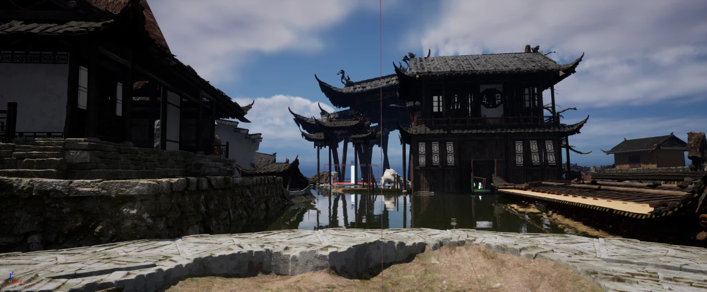
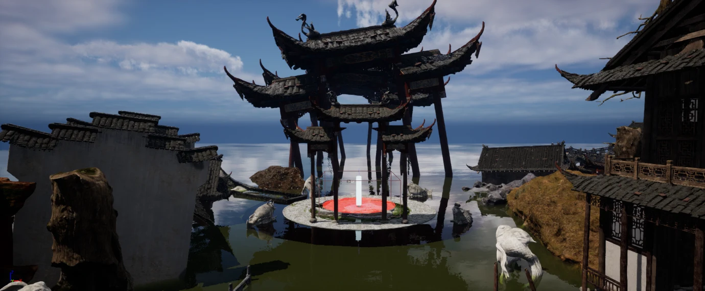
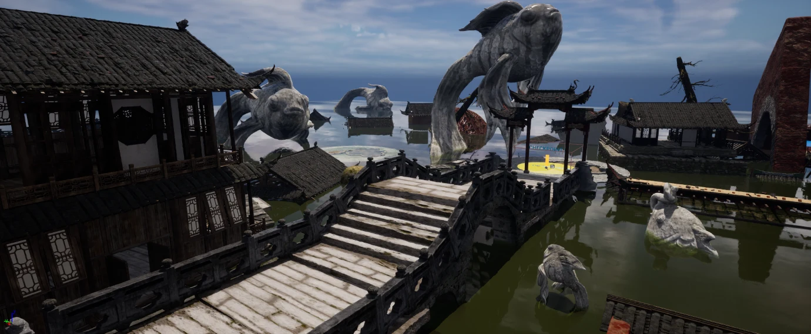
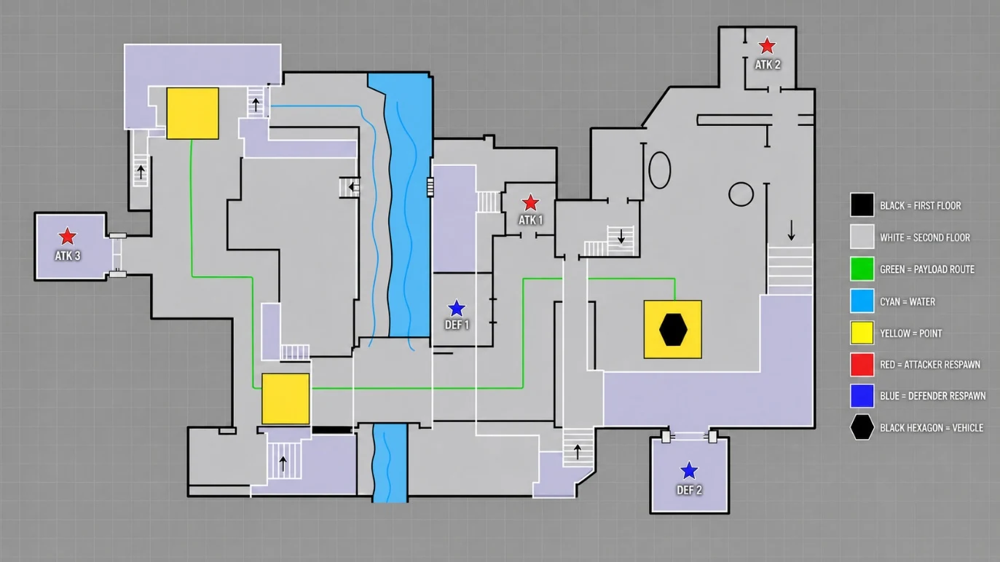

Point A / The altar
Plan a capture phase around the altar, approached through the main street, interiors and flanks.
Waterways, contested crossings, and a journey to the other shore.
ACADEMIC LEVEL PROTOTYPEPROTOTYPE STILLS
ACADEMIC LEVEL PROTOTYPE
01 / THE IDEA
An Overwatch-inspired Hybrid FPS level, designed and assembled in Unreal Engine 5.6.
The design starts with a contested altar at Point A, then proposes escorting a Spirit Boat across stone bridges, through flood-damaged ruins and toward the Gate to the Other Shore. Waterways divide the space; interiors, stairs and high ground create alternative approaches. The capture-to-payload structure connects the planned objectives to an environmental story about guiding trapped spirits out of a flooded Jiangnan town.
Plan a capture phase around the altar, approached through the main street, interiors and flanks.
Plan the Spirit Boat route across a stone bridge, with corners and structures breaking extended sightlines.
Plan a final approach through waterways and a secondary land route toward the ending landmark.
CURRENT SCOPE
The Unreal project, authored design document and screenshots confirm a built level environment and documented Hybrid flow. Capture progression, payload behaviour, networking and competitive balance are design intentions rather than verified complete multiplayer systems. This is an independent academic prototype inspired by Overwatch, not an official map.
02 / MY CONTRIBUTION
I developed the level concept and top-down layout, then assembled the map in Unreal. My work connects the objective sequence, main and flank routes, elevation, sightline control and environmental landmarks. I adjusted spatial widths and visual obstructions from the first-person perspective rather than treating the diagram as a final geometry specification.
Translate the capture-to-payload design into linked spaces, with direct main routes and longer flanking options.
Use bridges, corners, building interiors, stairs and upper floors to shape sightlines and access to high ground.
Assemble water-town spaces and landmarks, including the altar, stone fish and final gate, to connect navigation with the spirit-procession narrative.
03 / A CLOSER LOOK
Select an image. Take a closer look.




Level concept, layout, documentation and environment assembly: Rong Guo. The project uses Unreal starter content and third-party environment assets, including Traditional Chinese Style Park; these screenshots do not claim original authorship of every model, texture or system. Overwatch is referenced as a design influence only; the prototype is not affiliated with or endorsed by Blizzard Entertainment. Private coursework documents and source files are not published.
BACK TO THE COLLECTION